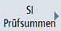
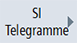
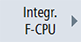
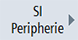

| | 1. | Wählen Sie den Bedienbereich "Diagnose" an. |
 | 2. | Drücken Sie die Menüfortschalt-Taste und den Softkey "Safety".
Das Fenster "Safety Integrated Diagnoseübersicht" wird geöffnet. |
| | | |
Diagnosebereich aufrufen: | | Status sichere Antriebe für Safety Integrated Funktionen anzeigen |
 | | Drücken Sie den Softkey "SI Antriebe". Das Fenster "Status sichere Antriebe ..." wird angezeigt. |
| | | Folgende Diagnoseansichten können Sie über die gleichnamigen Softkeys aufrufen: Basis Funktionen Erweit. Funktionen
|
| | | |
Diagnosebereich aufrufen: | ... | SI Prüfsummen anzeigen |
|  | | Drücken Sie den Softkey "SI Prüfsummen". Das Fenster "SI Prüfsummen Übersicht" wird angezeigt. |
| | | Folgende Einzelprüfsummen können Sie über die gleichnamigen Softkeys aufrufen: Globale Prüfsummen Antriebs-Prüfsummen Gruppen-Signaturen
|
| | | |
Diagnosebereich aufrufen: | | SI-Alarme anzeigen |
| | | Drücken Sie den Softkey "SI Alarme". Das Fenster "Alarme" wird angezeigt. |
| | | |
Diagnosebereich aufrufen: | | SI-Telegramme anzeigen |
|  | | Drücken Sie den Softkey "SI Telegramme". Drücken Sie den Softkey "SIC/SCC". Das Fenster "SI Telegramme PROFIdrive" wird angezeigt. |
Diagnosebereich aufrufen: | | SI Integrierte F-PLC anzeigen |
|  | | Drücken Sie den Softkey "Integr. F-CPU". Das Fenster "SI Integrierte F-PLC" wird angezeigt. |
| | | |
Diagnosebereich aufrufen: | | SI-Peripherie anzeigen |
|  | | Drücken Sie den Softkey "SI Peripherie". Das Fenster "SI Peripherie Übersicht F-Module" wird angezeigt. |
| | | |
Optional: | | Anderen Antrieb für Diagnoseansicht einstellen |
 ...  | | Für die Diagnoseansichten der Antriebe und der Antriebsprüfsummen können Sie jeweils einen anderen Antrieb einstellen: Drücken Sie den Softkey "Antrieb +" oder "Antrieb -". Im Fenster werden die Werte des nächsten bzw. des vorherigen Antriebs angezeigt. - ODER - |
  | | Drücken Sie den Softkey "Antrieb auswählen" und wählen Sie in der sich öffnenden Auswahlliste den gewünschten Antrieb aus den verfügbaren Antrieben direkt aus. Dieser Softkey erscheint nur, wenn mehrere Antriebe vorhanden sind. Drücken Sie den Softkey "OK", um die Auswahl des Antriebs abzuschließen. |
| | | |
Optional: | ... | Diagnosebereich verlassen |
| | | Um jeweils wieder in den vorherigen Diagnosebereich zurückzukehren, gehen Sie so vor: Drücken Sie den Softkey "<< Zurück". |